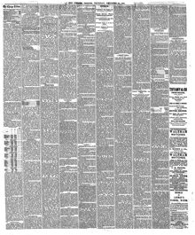

Upon the reriral •of the cropoaiHoa by General Grant, the 1Tras la llegada de la proposición por el general Grant, el 1
Chicago Tribune. Chicago, Ill., December 15, 1870. Page 2. View the originalVer el original


See the full pageVer la página completaThe Chicago Tribune reported that the population of Dominica was originally opposed to annexation, and that a subsequent plebiscite revived by General Grant was a "perfect farce" in which Baez's soldiers seized and imprisoned anyone who voted against it. The newspaper noted that the Dominican Republic was engaged in a civil war with insurgents led by former President General Cabral controlling the countryside, and that annexation would saddle the United States with roughly fourteen million dollars in debt, including a 30,000,000-franc gold debt owed to Hayti.El Chicago Tribune reportó que el pueblo dominicano se opuso originariamente a la anexión y que el subsiguiente plebiscito auspiciado por el general Grant constituyó una «farsa absoluta» en la que la tropa de Báez arrestó y encarceló a todo aquel que sufragase en contra. El rotativo hizo notar que la República Dominicana se hallaba inmersa en una guerra civil donde los insurrectos capitaneados por el expresidente general Cabral dominaban las zonas rurales, y que la anexión cargaría a los Estados Unidos con una deuda aproximada de catorce millones de dólares, incluidos 30.000.000 de francos en oro adeudados a Haití.
FULL TEXT:TEXTO COMPLETO:
The Republic of Dominica, although territorially embracing two-thirds of the island, has a population variously estimated at from 200,000 to 250,000, nearly all hybrids, Spanish and negro. General Grant sets the population at less than 100,000, but all other authorities place it at the higher figures. Hayti has a population of about 600,000, nearly all pure blacks, or with French blood intermingled. Hayti has paid France an indemnity of 60,000,000 francs, a moiety of which sum the Haytiens claim as due them by the San Dominicans; and by treaty between Hayti and San Domingo, it is provided that neither party shall alienate any portion of the territory. This fact is perfectly well known to the government here. I have before me a letter dated the 5th of February, 1868, addressed to "Hon. W. H. Seward, Secretary of State," by Louis Achille de Pitti-Fernandi, Consul of Hayti at New York, in which, by order of his government, he protests against any sale or transfer of any portion of the island; giving, among other reasons, the statement that he protests "in consequence of the existence of a treaty between the Government of Hayti and San Domingo, by which it is provided that no part of the island can be alienated by either of the two governments." In this letter the Haytien Consul also urges that at all events a vote of the inhabitants should be had—a plebiscite—and that at that time it was evident the population of Dominica was opposed to the annexation.La República de Dominica, aunque territorialmente abarca dos tercios de la isla, tiene una población estimada diversamente de 200,000 a 250,000, casi todos híbridos, españoles y negros. El general Grant fija la población en menos de 100,000, pero todas las demás autoridades la colocan en las cifras más altas. Haití tiene una población de unos 600,000, casi todos negros puros, o con sangre francesa mezclada. Haití ha pagado a Francia una indemnización de 60,000,000 de francos, una mitad de cuya suma los haitianos reclaman como debida a ellos por los santodomingueños; y por tratado entre Haití y Santo Domingo, se dispone que ninguna de las partes enajenará porción alguna del territorio. Este hecho es perfectamente bien conocido por el gobierno aquí. Tengo ante mí una carta fechada el 5 de febrero de 1868, dirigida al «Honorable W. H. Seward, Secretario de Estado», por Louis Achille de Pitti-Fernandi, Cónsul de Haití en Nueva York, en la cual, por orden de su gobierno, protesta contra cualquier venta o transferencia de cualquier porción de la isla; dando, entre otras razones, la declaración de que protesta «en consecuencia de la existencia de un tratado entre el Gobierno de Haití y Santo Domingo, por el cual se dispone que ninguna parte de la isla puede ser enajenada por ninguno de los dos gobiernos». En esta carta el Cónsul haitiano también urge que en todo caso se tenga un voto de los habitantes—un plebiscito—y que en ese momento era evidente que la población de Dominica se oponía a la anexión.
In this article, the newspaper calls the country 'Dominica.' It means the Dominican Republic, not the island of Dominica.En este artículo, el periódico llama al país «Dominica». Se refiere a la República Dominicana, no a la isla de Dominica.